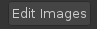
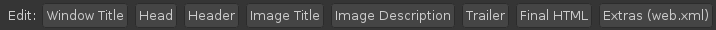
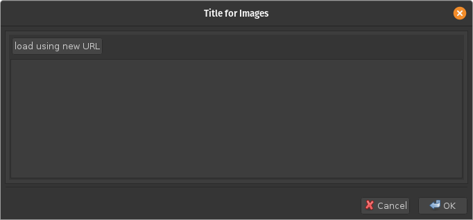
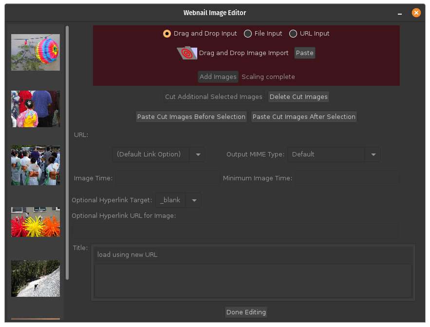

Webnail is a program that can create web pages and scale images so that they fit within a box with a specified height and width, allowing images to be conveniently laid out in HTML tables. Both the height and width are scaled by the same amount. Webnail can be run with a graphical user interface or as a command-line program, the latter allowing Webnail to be used conveniently in scripts.
While Webnail can be used as a web design tool and includes capabilities for dynamic HTML, in particular a table-driven maniupation of a Document Object Model (DOM), it can also be used easily for simpler tasks. This simpler tasks include
A typical web page that Webnail creates is shown below. With the layout selected for this example, Webnail can add optional HTML-formated text before and after the images. The images are shown in thumbnail form in a scroll pane to make searching and selecting a particular image easy and fast. There are also navigation controls to move to the first and last image, and to the previous or next images. It is also possible to open a separate window or tab (browser dependent) containing the current image, typically at higher resolution. Each image can be tagged with a title and description, and a default can be specified for either. In the example, only a title is shown. Additional controls allow the images to be displayed successively in a slideshow, optionally in a window filling the screen.
The choice of background color, text color, etc. can be altered through the use of CSS style sheets. It is also easy to add new layouts that include standard components (e.g., a logo at the top of the page).
To start Webnail, either type the command webnail in a terminal window or find it in a menu of installed programs (how to do this is window-system dependent). While there are a number of options, only a few are needed for basic usage. While Webnail's window has a number of controls, only a few are needed for basic use, as outlined in the following sections. A few controls are common to all of these:
This is the default, as specified by the output file type of "Image".
For this option, select the Dir or ZIP output file type. The images will appear in directory or Zip file respectively. An additional button is mentioned in the following instructions:

The following steps allow multiple images to be put into a directory or ZIP file. Each image will fit in a bounding box whose width and height are the maximum image width and maximum image height respectively.
For this option, select the Web Dir, Web ZIP, Web-Archive Dir, or Web-Archive output file type and provide a file or directory name. The Web Dir and Web ZIP options should be used for a basic web page. The Web-Archive Dir and Web-Archive options layout are use to create a web archive file (or a directory for a web archive file). WAR files can be used to deploy web applications, including ones consisting of static web pages. Some web servers provide mechanisms to install and remove web applications easily, and for these servers, a WAR file may be a convenient format. With the use of a WAR file, "welcome" or "home" pages, MIME type mappings, etc. can be configured automatically. Some additional controls may be will may be used in addition to those described above:

To create a simple web page, follow these steps.
An example of how the web page might look appears above.
To run Webnail with a Graphical User Interface (GUI), either type the command webnail in a terminal window or find it in a menu of installed programs (how to do this is window-system dependent).
This window contains a menu bar and a number of controls.
The menu bar contains four items: the
Keyboard navigation is supported (the following apply to the default Java look and feel):
Webnail starts execution with the keyboard focus set to the Dir radio button (the first radio button, labeled Image is selected by default). The choice of the output file type effects which controls are enabled - some controls are only appropriate when generating HTML files.
There are a number of controls:
- Output File Type
- labels a set of radio buttons to select the type of the output file. The options are
- Image. The output file is a single image (only one input image may be selected), with a file extension recognized by the Java implementation (run "webnail -l" from a terminal window to see the allowed MIME types and extensions). This is the default when Webnail starts up.
- Dir. The output is a directory used to store multiple image output files.
- Zip. The output is a ZIP file that will contain a set of images files.
- Web Dir. The output is a directory containing HTML and image files. A browser should open index.html in this directory.
- Web Zip. The output is a ZIP file containing the files that would have been produced for Web Dir.
- Web-Archive-Dir. This creates all the directory entries for the Web Dir option and in addition adds a Web-Inf directory containing a file named web.xml. The web.xml file specifies MIME type mappings and other information need to configure a web server.
- Web-Archive. This creates a file (Zip format) containing the files that would have been created if the Web-Archive-Dir had been used. The file extension must be .war.
- Output Image Format or MIME Type
- provides a selection of output-file formats or MIME types naming output-file formats. The choices are dependent on what the Java implementation supports.
- Output File or Directory Name
- provides the file or directory name for output. One can enter this in the Output File or Directory text field. Alternative the button adjacent to the text field named Choose can be pushed, in which case a dialog box that helps the user navigate through the file system will appear. If a file name is given, the corresponding file will contain the scaled image, so only one input file may be selected. If a directory name is given, the scaled-image files will be placed in that directory with names matching the names of the input files.
- Layout
- can have several values. The value Default Layout indicates that the web page created should contain a table containing a scrollable table of webnail images and a medium size image that changes depending on what webnail image is selected. The other options specify how to layout the images and text on a single page. The text is divided into three sections name the header, trailer, and final HTML. The final HTML section always appears at the bottom of the page, after the last script that the webnail program provides (for the default layout). These additional options are
- HTML5 LayoutA default layout that will generate an HTML 5 web page.
- Header, Images, Trailer. The header appears at the start of the page, followed by the images, which are laid out in a grid, followed by the trailer.
- Header, (Images & Trailer). The header appears at the start of the page. The Images and the trailer are in two parallel columns with the trailer on the right and one image per line on the left.
- Header, (Trailer & Images). The header appears at the start of the page. The Images and the trailer are in two parallel columns with the trailer on the left and one image per line on the right.
- Images & (Header, Trailer). The pages starts with two parallel columns. The left column contains the images, one per line, and the right column contains the header followed by the trailer.
- (Header, Trailer) & Images. The pages starts with two parallel columns. The right column contains the images, one per line, and the left column contains the header followed by the trailer.
- Custom. Use the previously specified custom layout, choosing one if a previously specified one is not available. The layout is specified by giving its file name or URL. For the format of the layout file, please see the section defining the layout-file format .
- Set Custom Layout. Choose a custom layout. This option is present only if Custom as previously selected. The layout is specified by giving its file name or URL.
- FullScreen Slideshow
- is a check box that, when selected, indicates that the web page created should allow the user to open a full screen window (actually, nearly full screen) showing the images in a slideshow at a high resolution.
- Sync Mode
- indicates that a slideshow should try to stay in synchronization with the timing information provided. If one image takes too long to load, the subsequent images will be displayed for less time until the timing is correct. Unless the Wait on Error option is in effect, images that are "broken" (cannot be loaded with a detectable error) are ignored.
- Wait on Error
- is a check box that, when selected, indicates that, if an image is not available, that image's duration should be added to the previous image's duration rather than ignoring the image that caused the error.
- Set Window Title
- when clicked opens a dialog box that allows a title for a browser window to be specified (it provides the value for the HTML TITLE element in the document head).
- FullScreen Background Color
- is a button that opens a dialog that sets the background color for a full-screen slideshow window. This does not change the background color of the main window.
- Image Time
- is a text field used to specify the time an image should be displayed in a slideshow. The value is specified as SECONDS, MINUTES:SECONDS, or HOURS:MINUTES:SECONDS, where SECONDS can either be an integer or a decimal number with up to three digits past the decimal point (comma in European notation).
- Minimum Image Time
- is at text field used to specify a the minimum time for which an image can be displayed in a slideshow. When sync mode is specified, the time an image is displayed may be reduced if the image arrives late (e.g., due to network delays) and this value ensures that reductions in display time will be shared by multiple following images. The value is specified as SECONDS, MINUTES:SECONDS, or HOURS:MINUTES:SECONDS, where SECONDS can either be an integer or a decimal number with up to three digits past the decimal point (comma in European notation).
- Maximum Image Width
- provides the maximum allowed image width measured in pixels.
- Maximum Image Height
- provides the maximum allowed image height measured in pixels.
- Use links
- is a check box that, when selected, specifies that links to the original images rather than copies should be used for any image that does not have to be scaled.
- Flatten
- specifies that, if the image width and height are not given (which implies no scaling), then the image appears in at the top level of the directory, ZIP file, or WAR file that is created.
- HREF link to Original Image
- specifies that, unless an optional hyperlink URL fora specific image is given (see Edit Images), a medium-sized image, when clicked, should load the original image (which should be specified by a URL).
- Title
- when clicked opens a dialog box that allows you to enter a default title for the images. The default title can be entered in a text area or by providing a URL indicating a resource that will be loaded to obtain the title. In either case the title contains HTML formatted text. This default can be overridden as described below. When the Default Layout option described above is used, the title appears directly below the image on the web page that is generated. Otherwise it the title appears only if the mouse is stationary over the image.
- Description
- when clicked opens a dialog box that allows you to enter a default description for the images. The default description can be entered in a text area or by providing a URL indicating a resource that will be loaded to obtain the description. In either case the description contains HTML formatted text.This default can be overridden as described below. When the Default Layout option described above is used, the description appears directly below the title on the web page that is generated. For the other layout options, the description is ignored.
- Head
- when clicked opens a dialog box for entering or editing HTML text that should appear in the document head. This can be used to add style sheets to the document. This text can be entered in a text area or by providing a URL indicating a resource that will be loaded to obtain the text. In either case the text must be HTML formatted.
- Header
- when clicked opens a dialog box for entering or editing HTML text that appears in the document. The position depends on the layout option chosen. This text can be entered in a text area or by providing a URL indicating a resource that will be loaded to obtain the text. In either case the text must be HTML formatted.
- Trailer
- when clicked opens a dialog box for entering or editing HTML text that appears in the document. The position depends on the layout option chosen. This text can be entered in a text area or by providing a URL indicating a resource that will be loaded to obtain the text. In either case the text must be HTML formatted.
- Final HTML
- when clicked opens a dialog box for entering or editing HTML text that appears in the document. The position is always at the end of the document. This text can be entered in a text area or by providing a URL indicating a resource that will be loaded to obtain the text. In either case the text must be HTML formatted. When the default layout is used, the text will follow the script element that loads the scripts needed for navigation controls. It can be used to load additional scripts (for performance reasons, scripts should be loaded at the end of an HTML document when possible).
The last 6 buttons, Title, Description, Head, Header, Trailer, Final HTML open similar dialog boxes. The one for the Title button is a suitable example:

One may either enter text directly into a text area or use a URL to reference the text. The button load using new URL will open a dialog box asking for a URL (a button will bring up an file-chooser dialog for the case were the URL references a local file). If accepted, the text area is disabled, but will contain the text referenced by the URL, and the load using new URL changes to one labeled delete URL. When a delete URL is clicked, there are three options, Remove URL and clear text, Remove URL and keep text, and Cancel. The Remove URL and clear text option, when clicked, deletes the URL and clears the text associated with it. The Remove URL and keep text option deletes the URL but keeps the text associated and enables the text area so that the text can be edited if desired. Finally, the Cancel option closes the dialog box without performing any actions.
The next set of controls are used to insert images into the application.
- Drag and Drop Input
- when selected indicates that one intends to either drag and drop images into the application or paste images that have been copied or cut from a file browser window. The drop target is denoted by an icon (a folder with a target symbol on it) and a paste operation is started by clicking the adjacent button.
- File Input
- when selected indicates that will either type a file name into a text field or click a "choose" button to open a dialog box that allows a file (or multiple files) to be selected.
- URL Input
- when selected indicates that the text field on the next line will contain a URL.
- Add Images
- when clicked (it is enabled only when necessary) causes the specified images to be copied into the program.
- Edit Images
- when clicked opens a panel for editing images that have been added.
- Run
- when clicked starts a task for generating scaled images and creating HTML files.
- Cancel
- when clicked cancels the last task.
- Progress Bar
- is the lowest control in the frame, and is a simple progress bar. It turns green when image files are being created and indicates the number of files that have been processed. It indicates the status of the last Run operation.
The Image Editor is displayed in a window shown below:

The controls in this window are the following:
- Input Controls
- is a copy of the set of controls used to add images to the program described above.
- Image List
- contains a single column of images that have been added. To edit an image, simply select it. In the figure above, the selected image is surrounded by a blue background (the "look and feel" may be different on a different platform). To edit entries, select a single one. To move or delete images, you can cut the images and then paste them, or (for a contiguous range of images) drag and drop them.
- Cut Selected Images from the List
- when clicked cuts the currently selected images from the image list. When used multiple times, the images that were previously cut are kept and newly cut ones are appended to this list. The drop point is before or after the image the mouse is over depending on whether the mouse is above or below the half-way point. A line will appear showing the current drop position.
- Delete Cut Images
- permanently deletes the images than have been cut.
- Paste Cut Images Before Selection
- when clicked puts the images that were cut just before the selection. Only one image may be selected in this case.
- Paste Cut Images After Selection
- when clicked puts the images that were cut just after the selection. Only one image may be selected in this case.
- URL
- is an informative field simply showing the URL of an image (for local files, a
file URL will be used.- Link Option
- indicates where high-resolution images that do not have to be scaled are found. There are several options:
- Default Link Option. In this case, the link option selected in the initial window is used as described above.
- Do not link. Regardless of the setting in the initial window, a link will never be used and instead a copy of the image will be used when the image does not have to be scaled.
- Link to Original Image. Regardless of the setting in the initial window, a link to the original image will always be used when the image does not have to be scaled.
- Output MIME Type
- allows one to specify the MIME type for the image that will be created. If the option Default is used, the value provided in the initial window will be used as described above. The remaining options are either MIME types or standard names for image formats that correspond to MIME types.
- Edit Properties
- when clicked opens a dialog box that allows an images properties to be edited as described below.
- Image Time
- is a text field used to specify the time an image should be displayed in a slideshow. The value is specified as SECONDS, MINUTES:SECONDS, or HOURS:MINUTES:SECONDS, where SECONDS can either be an integer or a decimal number with up to three digits past the decimal point (comma in European notation). When not blank, this control overrides the default image time specified in the initial window as described above.
- Minimum Image Time
- is at text field used to specify a the minimum time for which an image can be displayed in a slideshow. When sync mode is specified, the time an image is displayed may be reduced if the image arrives late (e.g., due to network delays) and this value ensures that reductions in display time will be shared by multiple following images. The value is specified as SECONDS, MINUTES:SECONDS, or HOURS:MINUTES:SECONDS, where SECONDS can either be an integer or a decimal number with up to three digits past the decimal point (comma in European notation). When not blank, this control overrides the default image time specified in the initial window as described above.
- Optional Hyperlink Target
- indicates whether clicking an image (not the thumbnail images used in the default layout) that has a link associated with it will cause the page the link references to appear in a new window or tab, or will replace the current page. Value are _top (for a replacement) and _blank for a new window or tab (the names are standard HTML ones). This option is used for the default layout. It is used for other layouts when the HREF Link to Original Image checkbox is selected.
- Optional Hyperlink URL for Image
- specifies the link to go to when a non-thumbnail image is clicked. This allows the link to refer to an arbitrary page instead of a larger version of the image. This option is used for the default layout. It is used for other layouts when the HREF Link to Original Image checkbox is selected.
- Title
- allows you to enter a title for the currently selected image. The load using new URL button loads the title text from a server or file after specifying a URL. When the Default Layout option described above is used, the title appears directly below the image on the web page that is generated. Otherwise it the title appears only if the mouse is stationary over the image. If left empty, the default title provided in the initial window is used as described above.
- Done Editing
- when clicked saves the latest changes and closes the Image Editor window.
The Layout Editor is contained in a window. It allows additional layouts (the standard ones are always available) to Webnail on a per-user basis. Each layout is represented by a URL, and the URLs are kept in Java preferences.
If proxies are needed to access servers, the following window can be accessed via the Proxiesmenu item in the Edit menu:
The controls are described below:
- Use System Proxies
- is a check box that, when selected, allows a system-specific proxy configuration file to be used to set up proxies. Java documentation claims this has been done for Windows and the Gnome desktop. If a system does not support this option, the proxies Webnail uses can be manually set (the remaining configuration options apply only when this check box is not selected).
- Configure HTTP Proxy
- is a check box that, when selected and enabled, indicates that a proxy should be used for HTTP. The HTTP Proxy Host option must then be filled in.
- HTTP Proxy Host
- is a text field that contains the domain name of the HTTP proxy.
- HTTP Proxy Port
- is a text field that contains port that the HTTP proxy is configured to use. The default value is 80.
- Configure HTTPS Proxy
- is a check box that, when selected and enabled, indicates that a proxy should be used for HTTPS. The HTTPS Proxy Host option must then be filled in.
- HTTPS Proxy Host
- is a text field that contains the domain name of the HTTPS proxy.
- HTTPS Proxy Port
- is a text field that contains port that the HTTPS proxy is configured to use. The default value is 443.
- Exclude from HTTP[S] Proxy
- specifies hosts that do not use an HHTP or HTTPS proxy. Multiple hosts can be specified by separating them with the character "|". In addition a wildcard character "*" can be used to indicate an arbitrary host: for example, "*.foo.com" would indicate any host whose domain name ends in ".foo.com".
- Configure FTP Proxy
- is a check box that, when selected and enabled, indicates that a proxy should be used for FTP. The FTP Proxy Host option must then be filled in.
- FTP Proxy Host
- is a text field that contains the domain name of the FTP proxy.
- FTP Proxy Port
- is a text field that contains port that the FTP proxy is configured to use. The default value is 80 (in the Java implementation, HTTP is used to contact the proxy).
- Exclude from FTP Proxy
- specifies hosts that do not use an HHTP or HTTPS proxy. Multiple hosts can be specified by separating them with the character "|". In addition a wildcard character "*" can be used to indicate an arbitrary host: for example, "*.foo.com" would indicate any host whose domain name ends in ".foo.com".
- Configure SOCKS Proxy
- is a check box that, when selected and enabled, indicates that a proxy should be used for SOCKS. The SOCKS Proxy Host and Proxy Port options must then be filled in.
- SOCKS Proxy Host
- is a text field that contains the domain name of the SOCKS proxy.
- SOCKS Proxy Port
- is a text field that contains port that the SOCKS proxy is configured to use.
- Save & Accept Preferences
- when clicked, the current configuration is saved an used.
- Accept Preferences
- when clicked, the current configuration is used but not saved permanently.
- Cancel Preference Changes
- when clicked, cancels the changes since the window became visible.
When started with no arguments, the GUI is displayed. If there is a
single argument that does not start with "-", the GUI will be displayed
and that file should be generated by the GUI's
webnail [-[-U] [-A USER PASSWORD]] [TYPE] WIDTH Height [IFILE OFILE]... webnail [-[-U] [-A USER PASSWORD]] [-t TYPE] [-w [-i] [ WEB_OPTIONS]] [-d DIR] WIDTH Height IFILE... webnail [-[-U] [-A USER PASSWORD]] [-t TYPE] [-w [-i] [ WEB_OPTIONS]] [-z ZIPFILE] WIDTH Height IFILE... webnail -f XML_INPUT_FILE -d TARGET_DIRECTORY webnail -f XML_INPUT_FILE -z ZIPFILE webnail -l webnail --gui [XML_INPUT_FILE|XML_INPUT_URL]
where
Multiple input files can be provided. If a directory is not provided by using the -d option or a zip-file name is not provided by using the -z option, input and output names must appear in pairs, and if an output file name matches an existing file, that file will be overridden.
The options are as follows:
Several options are applicable only when the -w command-line argument is present.
With the web-page options, Webnail will create a an HTML file named "index.html" that the user will open. This file is located in either the output directory or the zip file that Webnail creates. Elements in HTML files can have IDs associated with them, and a given ID may only appear once. The index.html file that Webnail uses the following IDs for all layouts:
- body
- is the ID for the HTML body element. This explicitly sets the background color to lightgray for the default layout and to white for the other layouts.
- imagesTable
- is the ID for the outermost table containing images.
The index.html file that Webnail uses the following IDs for the default layout but not any of the other layout options:
- webnailTable
- is the ID of the table containing an IFRAME that contains thumbnail images.
- imageTable
- is the ID of the table containing images scaled to fit in a bounding box 500 pixels by 500 pixels.
- titleDescrTable
- is the ID of a table that contains the title and the description, each on a separate row.
- title
- is the ID of a SPAN element that contains the title for an image.
- descr
- is the ID of a SPAN element that contains the description of an image.
- noJavascriptMsg
- is the ID of a Table-Data element (a TD tag) that contains text indicating that Javascript is needed. This tag sets its text color to "red" by default.
A style sheet that changes the background and text colors should put the text "! important" after setting colors for the "body" ID and the "noJavascriptMsg" ID in order to override the explicit settings in the elements with these IDs. Generally all three (background color, default text color, and the text color for the "no-script" warning) should be changed if any one is to be changed to ensure readability by the user (e.g., to avoid red text on a red background as an extreme example). If the foreground or background color should vary depending on what image is selected, that can be handled by setting up a DOM Map entry and putting the selection in a matching property element for the image.
An input file can be used to configure the output directory, ZIP file, or WAR file. The following provides a specification of this input file's format. It is of interest primarily to those who want to create software that generates input files for Webnail as Webnail itself has a built-in editor that can read, edit, and write files in this format.
When the -f option is used on the command-line or an input file is loaded via the "Load" menu option in the "File" menu when using the GUI, the output is completely specified by an XML file. This XML input file provides more options than are possible using the command-line interface, but identical options to those that the GUI provides. The file should start with the following two lines:
<?xml version="1.1" encoding="UTF-8"?>
<!DOCTYPE webnail PUBLIC "-//wtz//Webnail 1.0//EN"
"sresource:webnail-1.0.dtd">
Whitespace in the DOCTYPE element must consist of a single space, not two or more successive spaces or tabs: while the XML parser will not accept multiple spaces, the rules used to determine the file's MIME type are more strict. Within this file, URL's starting with "resource" are interpreted by the program as resources that can be obtained from the program's JAR file.
The following describe the XML elements for Webnail's file format - the format used to save the state of a webnail session or to configure a webnail session.
<!ELEMENT webnail (domMap?, title?, descr?, (user, password)?,
head?, header?, image*, trailer?, finalHtml?)>
<!ATTLIST images
xmlns CDATA #FIXED "http://bzdev.org/DTD/webnail-1.0"
windowTitle CDATA #IMPLIED
mimeType CDATA #IMPLIED
webMode (true|false) #IMPLIED
linkMode (true|false) #IMPLIED
flatMode (true|false) #IMPLIED
highResMode (true|false) #IMPLIED
webArchiveMode (true|false) #IMPLIED
zipped (true|false) #IMPLIED
syncMode (true|false) #IMPLIED
waitOnError (true|false) #IMPLIED
imageTime CDATA #IMPLIED
minImageTime CDATA #IMPLIED
bgcolor CDATA #IMPLIED
fgcolor CDATA #IMPLIED
rvmode (true|false) #IMPLIED
height CDATA #IMPLIED
width CDATA #IMPLIED
hrefToOrig (true|false) #IMPLIED
layout (normal
| headerThenImagesThenTrailer
| headerThenImagesAndTrailer
| headerThenTrailerAndImages
| imagesAndHeaderWithTrailer
| headerWithTrailerAndImages) #IMPLIED>
The child elements are described below. The attributes are defined as follows:
The title element is defined by the following declaration:
<!ELEMENT title (#PCDATA)*>
<!ATTLIST title
url CDATA #IMPLIED >
The content gives a title. When it appears as a child of the images element, it gives the default title to display below an image. When it appears in an image element, it gives the title for a specific image. The value is spliced into an HTML document. The entities "<", ">", "&", or """ should be used instead of the corresponding characters, or the value should appear in a CDATA section (delimited by "<![CDATA[" and "]]>"). If the url attribute is provided, the content should be empty, with the URL referencing a resource that contains the content (as HTML without the need to specially encode "&", "<", ">", or """).
The descr element is defined as follows:
<!ELEMENT descr (#PCDATA)*>
<!ATTLIST descr
url CDATA #IMPLIED >
The descr element gives a description, which is displayed directly below the title. When it appears as a child of the images element, it gives the default description. When it appears as a child of an image element, it provides the description for that specific image. The value is spliced into an HTML document. The entities "<", ">", "&", or """ should be used instead of the corresponding characters, or the value should appear in a CDATA section (delimited by "<![CDATA[" and "]]>"). If the url attribute is provided, the content should be empty, with the URL referencing a resource that contains the content (as HTML without the need to specially encode "&", "<", ">", or """).
H3>The Head ElementThe head element is defined by the following declaration:
<!ELEMENT head (#PCDATA)*>
<!ATTLIST head
url CDATA #IMPLIED >
and its content will appear in the HEAD section of an HTML document.
The entities "<", ">", "&", or """
should be used instead of the corresponding characters, or the value should
appear in a CDATA section (delimited by "<![CDATA[" and "]]>".
This allows various HTML elements to be added. These will be the last
elements in the HEAD section of the document and for the default layout
in particular, these declarations will follow the SCRIPT declarations that
load the scripts params.js and slideshow1.js. If the
url attribute is provided, the content should be empty,
with the URL referencing a resource that contains the content (as HTML
without the need to specially encode "&", "<", ">", or """).
The header element is defined by the following declaration:
<!ELEMENT header (#PCDATA)*>
<!ATTLIST header
url CDATA #IMPLIED >
Its content will appear at a position determined by the layout. The entities "<", ">", "&", or """ should be used instead of the corresponding characters, or the value should appear in a CDATA section (delimited by "<![CDATA[" and "]]>". If the url attribute is provided, the content should be empty, with the URL referencing a resource that contains the content (as HTML without the need to specially encode "&", "<", ">", or """).
The image element is defined by the following:
<!ELEMENT image ((filename | url), title?, descr?, (user, password)?, property*)> <!ATTLIST image mimeType CDATA #IMPLIED linkMode (true|false) #IMPLIED clickURL CDATA #IMPLIED clickTarget (_blank|_top) #IMPLIED imageTime CDATA #IMPLIED minImageTime CDATA #IMPLIED>
Each image element and its children define a separate image. The attributes for the image element are:
The children for the image element not previously defined are the url, filename, and property elements.
The filename element is defined as follows:
<!ELEMENT filename (#PCDATA)*>
Its content is a file name. A fully qualified name is preferable. The filename and url elements are mutually exclusive within an image.
The url element is defined as follows:
<!ELEMENT url (#PCDATA)*>
Its content is a URL indicating the location of the original image. The filename and url elements are mutually exclusive within an image.
The propertyelement is defined as follows:
<!ELEMENT property (#PCDATA)*> <!ATTLIST property key CDATA #REQUIRED>
The key attribute contains the name of a key provided in a mapping element, which specifies an HTML element ID, and the Javascript property for the matching DOM element. The contents of a property element gives the value to assign to the corresponding property of an HTML element in the DOM. If a property element is not provided,
The trailer element follows all of the image elements and is defined as follows:
<!ELEMENT trailer (#PCDATA)*>
<!ATTLIST trailer
url CDATA #IMPLIED >
Its content provides HTML to insert in a position dependent on the layout. The entities "<", ">", "&", or """ should be used instead of the corresponding characters, or the value should appear in a CDATA section (delimited by "<![CDATA[" and "]]>". If the url attribute is provided, the content should be empty, with the URL referencing a resource that contains the content (as HTML without the need to specially encode "&", "<", ">", or """).
The finalHtml element is the final element enclosed in an images element. It is defined as follows:
<!ELEMENT finalHtml (#PCDATA)*>
<!ATTLIST finalHtml
url CDATA #IMPLIED >
Its content provides HTML that should follow
the SCRIPT element that includes
the slideshow2.js script. This appears near the end
of the document for performance reasons. The entities "<",
">", "&", or """ should be used instead of the
corresponding characters, or the value should appear in a CDATA
section (delimited by "<![CDATA[" and "]]>". If the
url attribute is provided, the content should be empty,
with the URL referencing a resource that contains the content (as HTML
without the need to specially encode "&", "<", ">", or """).
Webnail layout files provide parameter values specific to a given layout and URLs for various files or resources. Each file must start with the following two lines:
<?xml version="1.1" encoding="UTF-8"?>
<!DOCTYPE images PUBLIC "-//BZDev//Webnail_Layout_Info 1.0//EN"
"sresource:webnail-layout-1.0.dtd">
Whitespace in the DOCTYPE elemement must consist of a single space, not
two or more successive spaces or tabs: while the XML parser will not
accept multiple spaces, the rules used to determine the file's MIME
type are more strict.
<!ELEMENT layout (multi | single)> <!ATTLIST layout xmlns CDATA #FIXED "http://bzdev.org/DTD/webnail-layout-info-1.0">
The layout element is contains a single element: either
a multi element or a single element.
A multi element indicates the use of multiple HTML files,
typically with an iframe of thumbnail images. A single element
indicates that all the images will be laid out on a single page,
suitable for printing or other uses.
The multi element's attributes are defined as follows:<!ELEMENT multi (name)*> <!ATTLIST multi twidth CDATA #REQUIRED theight CDATA #REQUIRED mwidth CDATA #REQUIRED mheight CDATA #REQUIRED marginw CDATA #REQUIRED marginh CDATA #REQUIRED margin_hpad CDATA #REQUIRED margin_vpad CDATA #REQUIRED t_vpad CDATA #REQUIRED num_t_images CDATA #REQUIRED t_vcorrection CDATA #REQUIRED name CDATA #REQUIRED url CDATA #REQUIRED>
These attributes are used to determine the values of the following template parameters:
twidth + 2 * marginw + margin_hpad.
theight + (2
* t_vpad)) * num_t_images) + (2
* marginh) + margin_vpad
+ t_vcorrection.
mwidth + 2 * marginw +
margin_hpad.
mheight + 2 * marginh +
margin_vpad.
twidth + 4 * marginw +
margin_hpad + mwidth.
The single element's attributes are defined as follows:<!ELEMENT single (name)*> <!ATTLIST single max_thumbwidth CDATA #REQUIRED max_thumbheight CDATA #REQUIRED tiled (true | false) #IMPLIED tiledWidth CDATA #IMPLIED name CDATA #REQUIRED linkedURL CDATA #REQUIRED noLinkURL CDATA #REQUIRED>
true if the
images are tiled (arranged in a grid); false if the
images arranged vertically.
<!ELEMENT name (#PCDATA)> <!ATTLIST name lang CDATA #REQUIRED>
Webnail uses a template processor to create some of the HTML files and Javascript files that Webnail generates. These files should start with the following sequence of characters (there is no terminating newline character or sequence of characters):
$(!M.T application/x.webnail-template)
This sequence of characters is used by file managers to recognize the MIME type of a webnail-template file and display an appropriate icon for the file. The sequence may be prefaced by a byte-order mark, the bytes 0xEF,0xBB,0xBF. The file should also end in the suffix ".wnt". All template files should be UTF-8 encoded.
Template files use the following escapes and directives.
$ is represented by $$.
$(" and end with
")".
!" indicates a comment,
which will be removed.
:) with each subdirective consisting of letters, digits,
and periods, indicates iteration. The first subdirective indicates
a replacement table to use and the second subdirective names a directive
that ends the iteration. The text in between will be repeated N times,
with directives in the replacement table possibly changing from one
iteration to the next.
The following directives are recognized for toplevel HTML files:
</TR><TR> if a row should end
and an empty string otherwise.
The following directives are used to set Javascript variables.
true if
full-screen mode is supported; false otherwise.
true.
true if one image is
delayed, the duration of other images will be adjusted in an attempt to
make the starting time of subsequent images to be what one would have
expected.
true, if there is
an error, the previous image will be displayed for the duration of the
missing image in addition to the previous image's own duration.
medium or high.
The following directives are also available, used by a Javascript template during iteration over images in a repeatrows block.